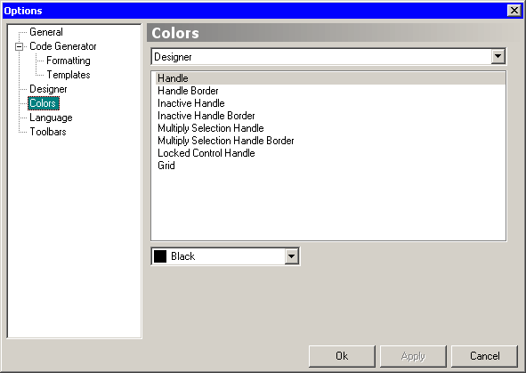

On this page you can change colors of different Koda elements. In upper combo you have select elements group, in list you have select element.
Object Inspector group contain special items “Property Group 1” - “Property Group 5”. When selecting those items, an input field appear, where you can set semicolon-separated list of properties that should have this color. By default first group is used for event properties.